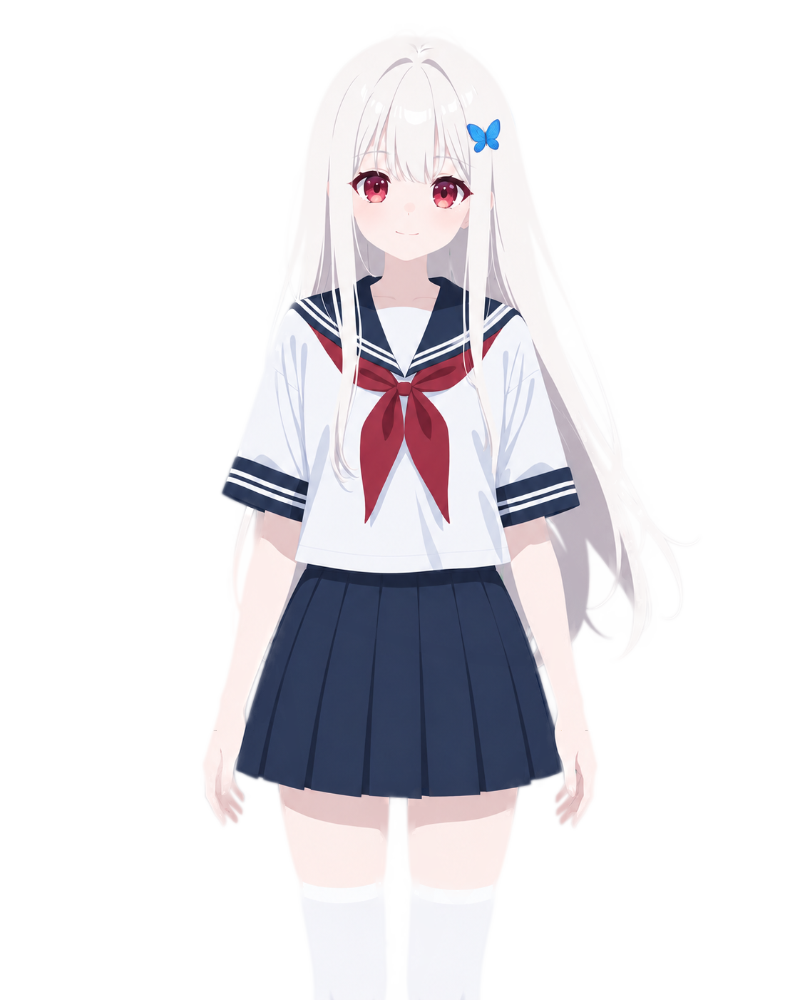
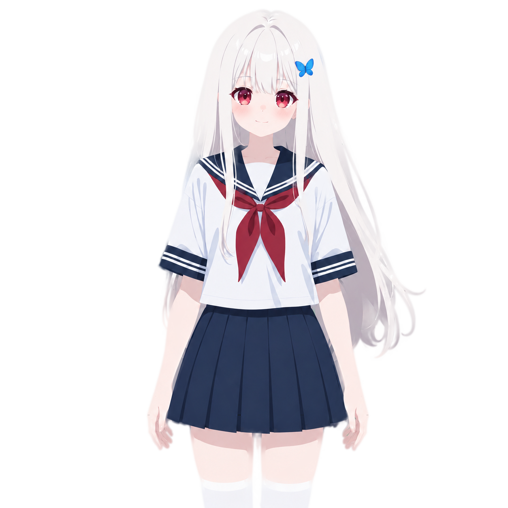
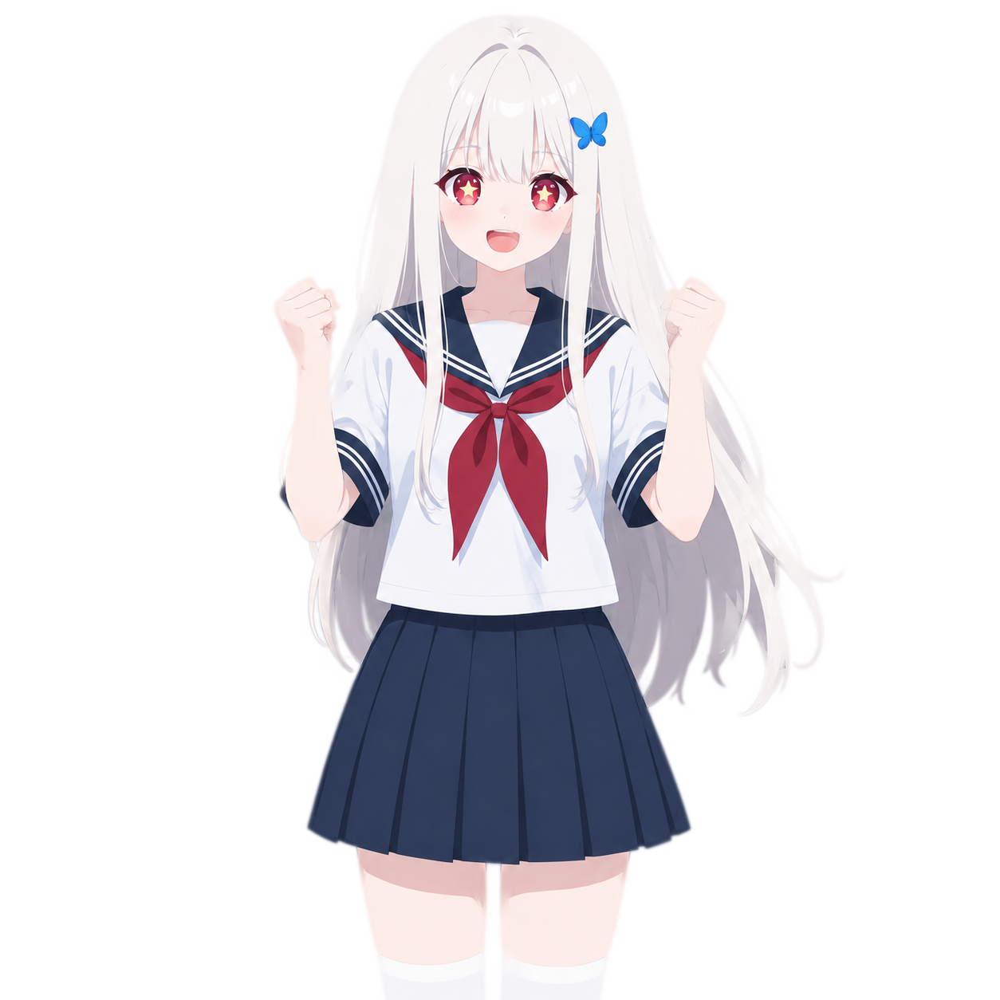

佩伊洛专属流式 Galgame 界面 · 视觉预览
红 + 蓝 + 白 · 优雅清冷
配色提取（基于角色形象） 色板
场景 1：普通对话 · 正在打字（流式生成中） 流式
AI 一输出 <galgame> 标签头即立即挂载界面外壳，文字通过 gsap SplitText
逐字淡入打字效果出现。 顶部进度 1/12? 中的
? 表示流式还未结束，总数仍可能增加。
✦
𝓟𝓮𝔂𝓻𝓸 · 佩 伊 洛
✦

🦋
❄
佩伊洛
今天我们一起走吧？……嗯，其实每天都一起走的
场景 2：旁白 · 不显示发言人名字 旁白
speaker 为 旁白 或 独白 时，发言人名字位置留白，专注于环境描述。
✦
𝓟𝓮𝔂𝓻𝓸 · 佩 伊 洛
✦

🦋
❄
·
风吹过樱花林，粉白的花瓣像雪一样飘落，佩伊洛的白发也跟着轻轻飞舞。
场景 3：选择框 · galgame 播放完毕后从底部淡入 选择框
所有对话播放完毕时 store.has_ended === true 触发选择框显示。 点击 →
triggerSlash('/setinput ...') 写入输入框（与现有 RoleplayOptions.vue 行为一致）。
左侧红蓝渐变线条 + 红色圆点对应角色红瞳。
✦
𝓟𝓮𝔂𝓻𝓸 · 佩 伊 洛
✦

🦋
❄
场景 4：CG 模式 · 预留实现（无图也能跑） CG模式
当 background 以 CG/ 开头时自动切换： 立绘消失 + 背景
object-fit: contain 保留完整比例 + 对话框变深色（保证 CG 上文字可读）+ 控制栏多出
放大 按钮。
✦
𝓟𝓮𝔂𝓻𝓸 · 佩 伊 洛
✦
佩伊洛
……能、能一直待在你身边吗？哪怕只是这样，肩并肩走着也好。
💡 当前 CG 资源为空时：<img> onerror 触发 → 显示纯黑背景 + 提示文字「（CG
图片加载失败）」。对话依然正常推进，不影响主流程。
场景 5：隐藏 UI · 纯欣赏场景 UI开关
点击 隐藏UI 按钮后对话框消失，纯欣赏立绘+背景，再点 显示UI 恢复。
✦
𝓟𝓮𝔂𝓻𝓸 · 佩 伊 洛
✦

🦋
❄
视觉规格总结 规格
容器：默认 16:9 横屏；窄屏（<768px）自动切换为 3:4 竖屏
标题栏：36px 高，红蓝渐变 85% 透明
背景切换：Vue Transition 1.2s 淡入淡出
立绘：底对齐，高度 90%，单角色居中；多角色按 (index+1)/(n+1) 分布
说话角色：正常显示；其它角色 brightness(0.85) contrast(0.95) 暗化
打字动画：gsap SplitText 切字 + stagger 0.04s/字（约 25 字/秒）
对话框：底部固定，顶部 60px 渐变淡入；普通白底（雪白 93%）+ CG 深色底（黑 75%）
选择框：屏幕中央，最多 3 个选项；左侧红蓝渐变细线 + 红色圆点
控制栏：右上角悬浮，白底红边按钮组（重播/进度/日志/隐藏UI/放大）
点击交互：容器点击 → 推进对话；正在打字 → 立即跳过打字
资源路径正确性校验 关键
本预览页使用：../背景/家中玄关/白天.jpg 等本地相对路径
实际项目运行时：CDN_URL/背景/{location}/{time}.jpg 与
CDN_URL/角色立绘/{outfit}/{expression}.png
AI 输出 YAML 字段：background: 家中玄关/白天.jpg 与
tachie: 校服/微笑.png 完全对应 文件-立绘.yaml 与
文件-背景.yaml 中的定义。